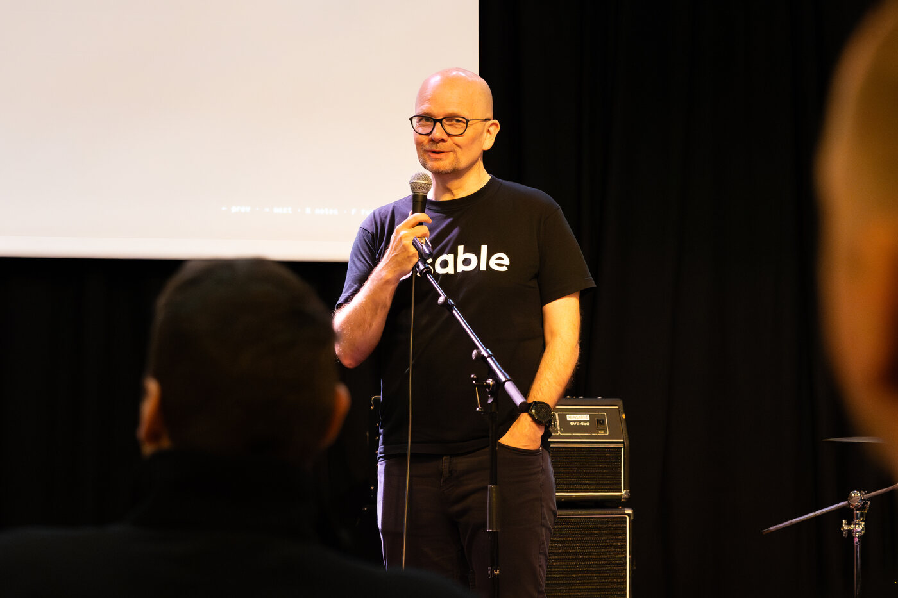
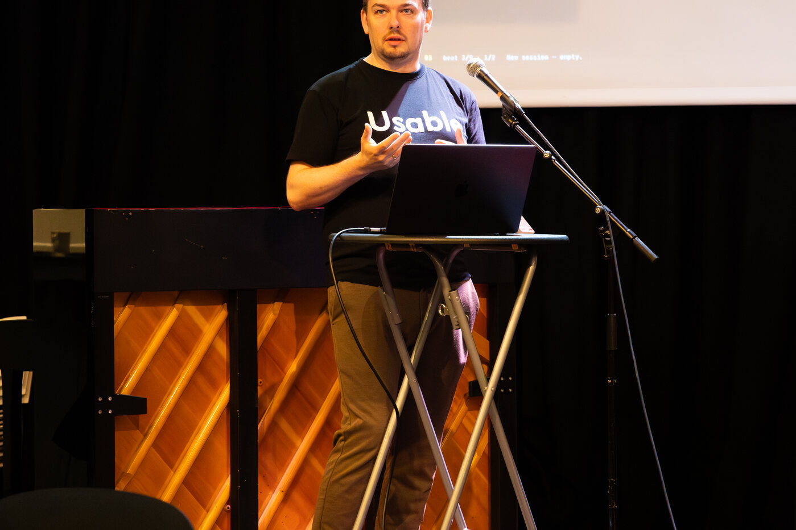
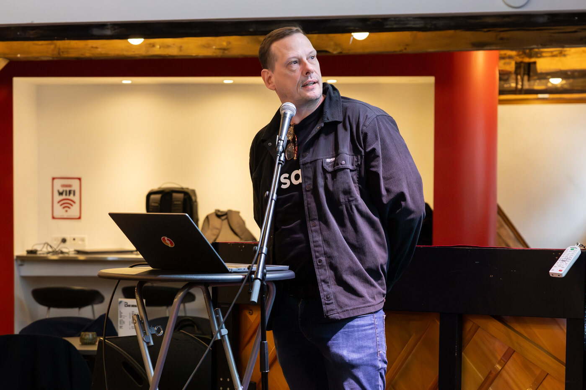
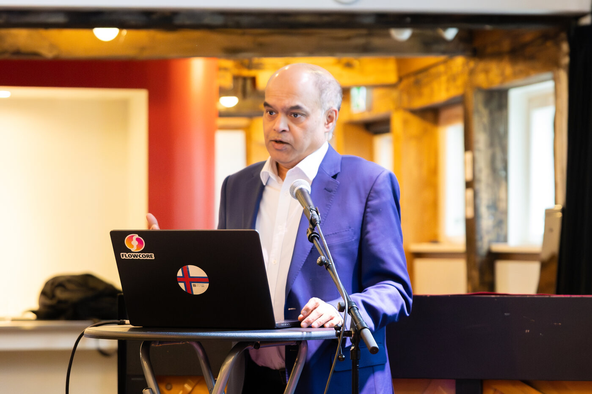
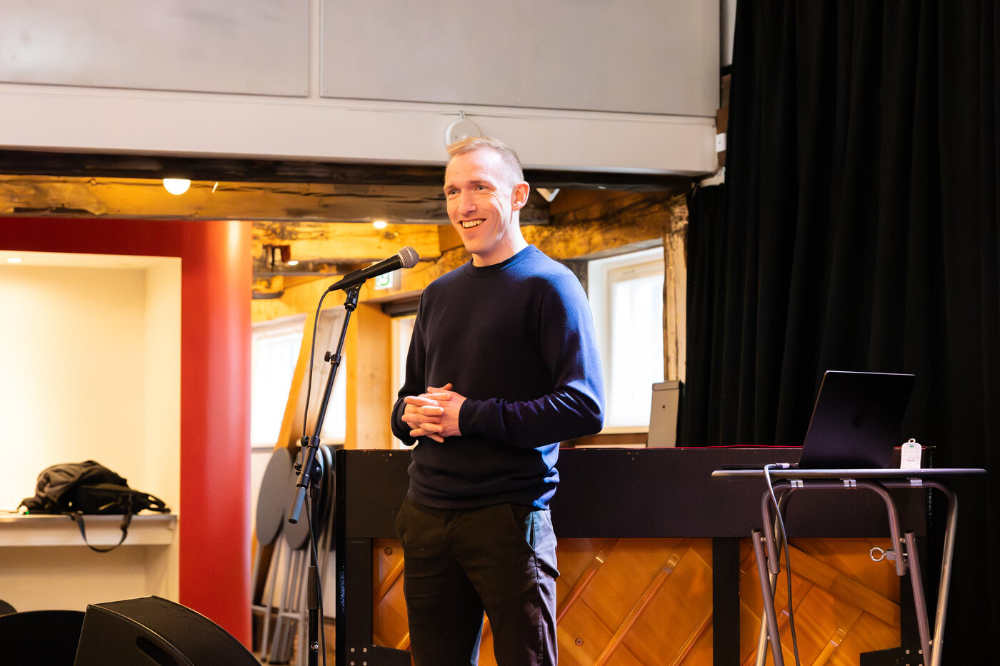
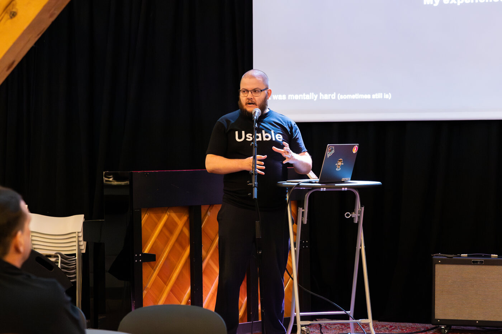
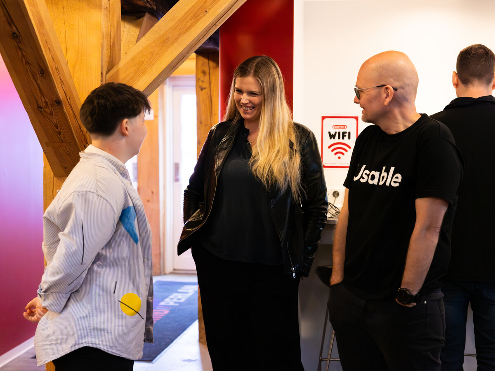
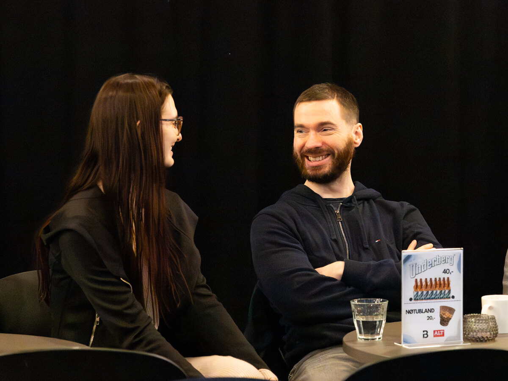
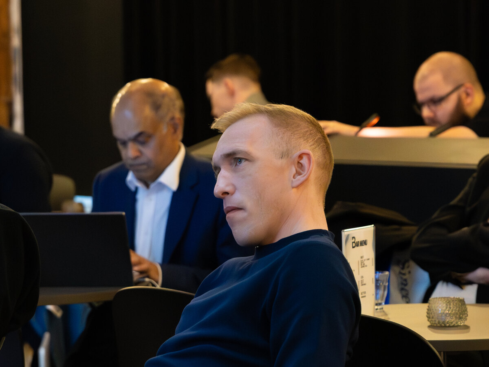
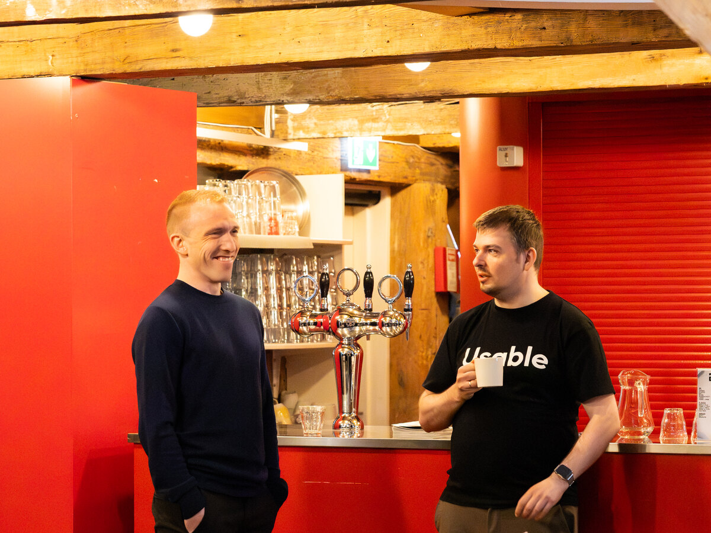

Usable Fragments was deliberately compact: a Thursday morning side-event during Tonik, built around concrete work rather than abstract AI optimism. Each speaker came at the same question from a different angle: if every team can reach capable models, what still makes one organisation's AI work better than another's?
The answer that emerged was not a better prompt or a longer context window. It was memory: the standards, decisions, precedents, evidence, tradeoffs, and working habits that let an agent act inside the real organisation instead of a generic version of it.
- 09:00 Welcome by Ólavur Ellefsen, CEO and co-founder
- 09:10 Julius á Rógvi Biskopstø: The Usable Development Process
- 09:40 Brian Bischoff: Two agents, one operator
- 10:15 Break
- 10:30 Ajit Jaokar: Context Graphs
- 11:10 Jaspur Højgaard: Developing a National AI Strategy with Usable Knowledge Management
- 11:40 Jóhann Østerø: Usable for Game Development
- 12:00 Finish
Ólavur Ellefsen: Welcome

Ólavur opened by naming the tension behind the whole event. Models are becoming more available, more capable, and more similar from team to team. Outcomes are not. The difference is often what the AI knows about the organisation when it starts: the patterns, standards, decisions, sensitive boundaries, and lessons that do not live in the model itself.
That made the morning practical from the start. Usable Fragments was not framed as another AI showcase. It was a set of working examples of what changes when agents can read shared memory before acting and write useful learning back afterwards.
Julius á Rógvi Biskopstø: The Usable Development Process

Julius took the opening thesis straight into software development. His starting point was the uncomfortable part of AI coding: it is fast, but fast is not the same as aligned. Without shared memory, every Claude, Codex, or Cursor session can behave like a new developer joining the team with no history. Reasonable code still arrives with the wrong library, the wrong testing pattern, the wrong environment convention, or the wrong architecture instinct.
The process Julius presented is designed to move that correction earlier. It starts with a Product Requirements Document, or PRD, because the PRD gives the team and the agent a shared understanding of what should be built, why it matters, and what constraints have to be respected. From there, the work is broken down systematically into smaller vertical slices that can be planned, implemented, reviewed, and verified without losing sight of the product goal.
The important part is that the agent is not just asked to produce code quickly. It is asked to follow good software engineering practice: plan the work, use the standards of the codebase, write and run tests, rely on continuous integration and deployment to catch problems, and fix issues before they become review burden. When the work is verified, the lesson is written back to Usable so the next task starts with more context than the last one.
The examples were deliberately concrete: use the package manager the repo has standardised on, follow the established linting and migration patterns, read environment variables through the approved layer, preserve source-event IDs, and respect architecture decisions before code reaches review. The point is not ceremony. It is to move the alignment tax from review time to plan time, where it costs minutes instead of hours.
Brian Bischoff: Two Agents, One Operator

Brian's session made the memory layer feel lived-in. He showed how he uses Hermes for both personal projects and production work, with the same underlying idea but different permissions, guardrails, and expectations.
On the personal side, his operator Langa Stina can work across a Mac mini, Gmail, GitHub, AWS, browser automation, Flowcore, and Usable. The name is a small nod to OpenClaw: Langa Stina sounds like langoustine, while Stina is a familiar Nordic name. That setup has helped ship projects like Argilzar Workouts, Mickey Scorekeeper, Klokkan, and a Hermes Usable memory plugin. The operator is broad because the personal blast radius is manageable and the goal is momentum.
At Globe Tracker, where Brian is CTO, the shape is different. Globe Tracker is an IoT company in the refrigerated-container, or reefer, world, working with the major companies that move temperature-controlled containers globally. That makes the production assistant a much more operationally serious setup: it runs against work accounts, work repositories, Atlassian, observability tooling, protected branches, PR-only GitHub access, review gates, smoke tests, and production triage workflows. It can help with repo audits, Jira-to-PR work, GitOps manifest changes, smoke tests, and inbox or calendar follow-up, but it is harnessed for a production environment.
The lesson was the ordering. Slack makes the operator reachable. MCP gives it tools. But memory is the load-bearing layer. Without memory, every Slack message becomes a fresh briefing. With memory, the operator can carry standards, preferences, receipts, and previous decisions across both the personal and professional planes.
Ajit Jaokar: Context Graphs

Ajit's talk was the conceptual center of the morning. He widened the lens from team workflows to institutional AI and asked why so many enterprise AI efforts look promising in pilots but struggle to become durable capability.
His diagnosis was sharp: enterprises expose data to AI, but the reasoning behind the data is often invisible. Systems of record are good at representing the current state: the ticket status, the CRM field, the document version, the policy paragraph, the incident metric. That is the state clock. What usually disappears is the event clock: what happened, in what sequence, under which constraint, after which precedent, and for what reason.
Context graphs are a way to preserve that missing layer. Ajit was careful not to reduce them to a larger vector store, a graph database with nicer labels, or RAG with better plumbing. Those can be useful parts of the system, but they do not automatically capture institutional judgment. The more valuable object is the reasoning trace: what was observed, what constraint mattered, what tradeoff was chosen, what action followed, and what happened afterwards.
That is why he separated decision traces from trajectory logs. A trajectory log can tell an organisation what happened. A decision trace helps it reuse why it happened. If an agent can only replay actions, it imitates surfaces. If it can reason over durable traces, it can begin to work with the organisation's practiced judgment.
The ontology point was just as important. Many knowledge systems begin with a prescribed schema and then force work into it. Ajit's argument was that a mature context graph should also learn from accumulated work. Agents become informed walkers through organisational state space: they move through constraints, precedents, goals, exceptions, and consequences, and the structure of that movement helps reveal the organisation's real operating ontology.
Three practical conditions kept coming up:
- Decision surfaces must be legible. If the work never exposes the decision, the graph cannot learn from it.
- Capture must respect friction. The memory layer has to fit the flow of work instead of becoming another reporting ritual.
- Context must stay current. Stale context is not organizational intelligence; it is institutional sediment.
The payoff is bigger than retrieval. With enough durable reasoning, context graphs can support simulation, counterfactuals, onboarding, incident review, and cross-team learning. They let an organisation ask not only "what do we know?" but "how do we tend to decide when the situation looks like this?"
That also reframes continual learning. Instead of constantly retraining the model, an organisation can improve the world model the agent reasons over. The model stays general. The context graph compounds the local judgment.
Ajit's AntiPilot framing landed because it matched what many teams have felt: a demo can impress when the task is isolated, but production AI needs the organisation's accumulated judgment. The durable advantage is not the model alone. It is the memory around the model: the decisions, evidence, constraints, and lessons that make institutional AI more than a pilot.
Jaspur Højgaard: National AI Strategy With Usable Knowledge Management

Jaspur's talk moved the same idea into national strategy work. As project manager for the national AI strategy of the Faroe Islands, he was speaking from the middle of the work rather than from a theoretical case. A national AI strategy is not a single document problem. It is a months-long knowledge problem involving public-sector stakeholders, workshops, source material, notes, decisions, gaps, contradictions, and changing tools.
He described the work in two phases: a pre-study, followed by the full action plan. Across that process, Usable mattered in three ways. The knowledge was available wherever he worked. It was available to everyone on the project. And it could be used for synthesis and analysis, not just storage.
That meant the team could move between Usable Chat, Cursor, Claude Cowork, and whatever came next without losing the project memory. The workspace became a shared source of truth instead of another folder where the "latest version" had to be rediscovered. New contributors could browse the fragments and understand the state of the work without forcing someone else to reconstruct the story.
The strongest point was that memory became part of the output. Phase A did not merely produce a report and disappear. It left behind an AI-readable body of evidence, rationale, synthesis, missing perspectives, and open questions that could feed Phase B. In that sense, the strategy was not only a PDF. The project's memory became a living deliverable.
Jóhann Østerø: Usable For Game Development

Jóhann closed with a very different but surprisingly connected workflow: game development. His talk started with the mental shift from coding with tools to building with agents. The first attempt was an "Infinite Memory" game: a live multiplayer memory game where the stack included Next.js, Drizzle, Flowcore, Postgres, and the usual practical pieces around a real web application.
The honest lesson was that agents are not a one-shot prompt machine. The real flow was iterative: idea to game specification, specification to implementation, implementation back to design questions, and then forward again. Usable held the design memory, technical choices, lessons, and evolving intent across that loop.
That eventually became a dedicated game-development workspace, seeded with Jóhann's own game-design experience and continuously expanded. The later experiments pointed toward Unity and a project called The Undelivered, where Usable-style memory could be integrated into the development process and potentially into the game itself.
The takeaway was simple and encouraging: you can build games with Usable, and you can bring a memory-backed agent into the creative process without flattening the work into generic AI output.
What Held It Together
The morning worked because the talks were not trying to prove the same point with the same example. Julius showed memory as development discipline. Brian showed it as operator continuity. Ajit showed it as institutional architecture. Jaspur showed it as public strategy infrastructure. Jóhann showed it as creative production memory.




Different surfaces, same lesson: agents become more useful when they inherit the organisation's durable context and improve it after the work is done. That is the compounding loop we wanted Usable Fragments to make visible.
Same AI. Different memory. Different results.